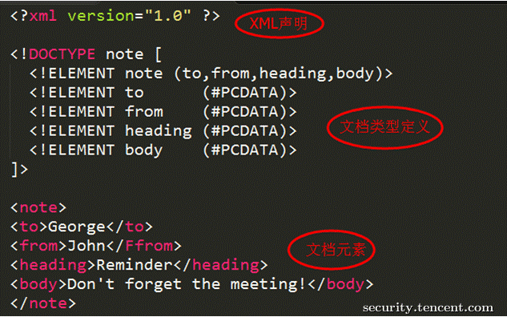

XXE漏洞从入门到自闭
好久没有更新博客了，这半个月都在写自己的扫描器，也没有follow一些新出的漏洞。曾计划写一个讲述OWASP TOP10系列漏洞的利用和绕过姿势的系列，帮助对Web安全感兴趣的人入门。现在发现要做的事有好多，必须一件一件来，贵在坚持！
XML和Json可以算现代Web应用通信中使用最多的两种数据格式。XML文件看似简单，但我们可能对它没有那么“了解“。日常的开发中，我们关注点可能更多在XML元素上，而忽略了XML实体。而这些实体正是构造攻击代码的主要工具。想玩转XXE（XML External Entity Injection，XML外部实体攻击）漏洞，必须先了解实体的用法。
基础知识
一个常规的XML文档主要有三部分构成：文档信息声明、文档类型定义、文档元素，如下图（借一下别人的图）：

- 文档声明：定义版本号，编码格式等信息
- 文档类型定义：用来定义XML文档的合法构建模块，这里便是定义实体|元素的地方
- 文档元素：就是将对象的属性以标签的形式记录下来，其中标签内部不可以出现
<特殊字符，如需要使用，则采用实体编码方式（和HTML相同：< => < > => > & => & ' => ' " => "）
文档类型定义
DTD（Document Type Definition）可以看作是一个或多个XML文档文件的模板，在其中定义XML文件的元素、元素的属性、元素的排列方式、元素包含的内容等。DTD也可以用内部定义或引用外部的方式：
1 | <!-- 内部定义方式 --> |
实体定义
实体的作用是方便重复使用，有点类似于编程语言中变量的意思。实体的定义放在DTD中，即[...]的内容。跟DTD的声明方式一样，也可以用内部定义和外部引用两种方式。
内部实体：
1 | DTD中定义：<! ENTITY 实体名 "实体值"> 元素中使用：&实体名; |
外部实体：
1 | DTD中定义：<! ENTITY 实体名 SYSTEM "URI/URL"> 元素中使用：&实体名; |
参考文章
本博客所有文章除特别声明外，均采用 CC BY-NC-SA 4.0 许可协议。转载请注明来自 Linf3ng's Blog！